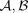
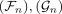
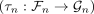
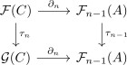

morphism of delta functors
1. Definition
Let

be abelian categories and
be delta functors. Then a morphism of delta functors is defined as sequence
of natural transformation such that for each short exact sequence
the following diagram commutes
